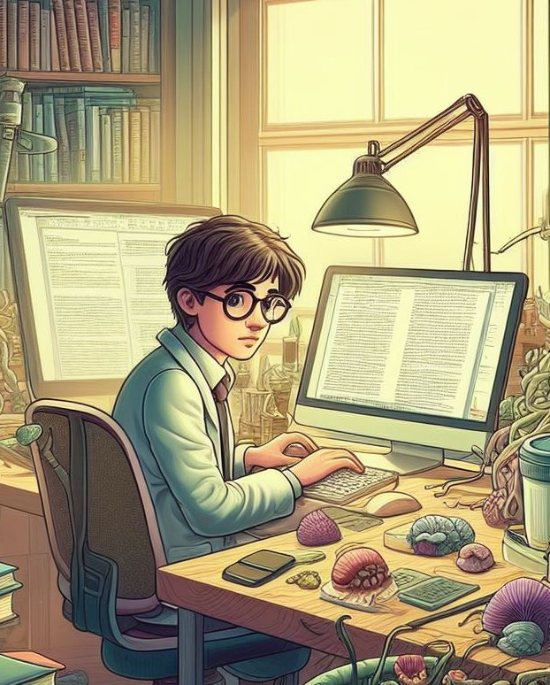

|
Jean Barré
Hi, Welcome to my webpage!
I am Jean Barré, a first-year Ph.D. candidate woriking with Thierry Poibeau, and Thomas Conrad at École Normale Supérieure / Paris Sciences Lettres (France).
My research falls within the field of Computational Literary Studies, where we employ machine learning and NLP techniques on large, digitized text collections.
The aim is to explore literary history through both close and distant reading analyses, gaining insights into long-term literary trends and validating their textual reality
One aspect of my work focuses on the concept of Canonicity and its process of canonization. I aim to investigate whether we can establish links between canonicity and textual dynamics, exploring whether they can be viewed as causal or as outcomes of biased latent selection mechanisms.
Additionally, I am investigating Genette's notions of transtextuality & architextuality, encompassing various relationships such as imitation, influence, and subversion that one text shares with all others. I have a particular interest in novelistic sub-genres as manifestations of this architextuality.
The overarching goal of the project is to develop synchronic models that facilitate the analysis of the formal evolution of literature.
I am an engineer by training. I gratuated from the master degree "Digital Humanities" with a specialization in the CLS at École nationale des Chartes in 2022.
Feel free to reach me !
Email /
Github /
Twitter /
Bluesky
|

|
Keywords
Computational Literary Studies, Literary Theory / History, NLP, Machine learning, Stylometry, Cultural Analytics, Literary Evolution
News
We are organizing a workshop on computational literary studies in collaboration with Thierry Poibeau, linked to CHR, on December 5th. Stay tuned!
Publications
Peer-reviewed articles
- Barré et al. “Beyond Canonicity. Modeling Canon/Archive Literary Change in French Fiction.”
Computational Humanities Research, Dec 2023. Preprint, Long Paper, Accepted.
- Barré, et al. “Operationalizing Canonicity: A Quantitative Study of French 19th and 20th Century Literature.”
Journal of Cultural Analytics, vol. 8, no. 1, Oct. 2023, https://doi.org/10.22148/001c.88113, [pdf].
- Barré et al. “Pour une détection automatique de l’espace personnage dans les romans.”
Humanistica, Association francophone des humanités numériques, Jun 2023, Genève, Suisse, {hal-04105537} - [pdf - french].
- Grunspan, Barré et al. “Event annotation for literary corpora analysis.”
DH2022, Tokyo, Jul 2022. {hal-03738806} - [pdf].
Talks
- June 2023, Mesurer le changement littéraire [pdf - french].
Journée Doctorale du Lattice, Jun 2023, Montrouge, France.
- June 2023, Pour une détection automatique de l’espace personnage dans les romans [pdf - french], with Pedro Cabrera Ramirez.
Humanistica 2023, Association francophone des humanités numériques, Jun 2023, Genève, Suisse.
- April 2023, Operationalizing Canonicity. A Quantitative Study of French 19th and 20th Century Literature [pdf].
Stanford Literary Lab meetings.
- March 2023, What BookNLP does to texts ? [pdf - french], with Frédérique Mélanie-Becquet.
Workshop - Ce que le numérique fait aux humanités, École Normale Supérieure.
- November 2022, Une histoire computationnelle du genre dans la fiction - [pdf - french]
Séminaire du Lattice.
- September 2022, French BookNLP - Progress Report - [pdf]
Presentation to David Bamman, UC Berkeley.
Teaching
- Introduction to Computational Literary Studies, École Nationale des Chartes, M1 - [pdf - french]
- Introduction to NLP for DH [pdf - french]
- A Computational Literary History of Gender in fiction, PSL intensive week, Project 4 - link
Introduction [pdf], Students Results [pdf], Report - french.
|